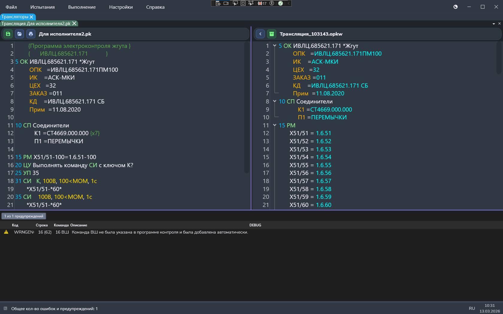

Общее описание
Транслятор — это программа для трансляции и отладки программ контроля. При запуске транслятора открываются три окна. Слева - окно исходной ПК, справа - окно оттраслированной ПК, внизу - окно списка ошибок. Двойной щелчок по метке ошибки подсвечивает соответствующие строки в обоих окнах ПК и прокручивает их в видимую область.
Из чего состоит окно

| Элемент | Что делает |
|---|---|
| Леовое окно - редактор |
|
| Правое окно - транслятор |
|
| Вертикальный разделитель | Позволяет менять ширину левой и правой панелей — потяните мышью за узкую полосу между редакторами. |
| Список ошибок |
Таблица внизу с колонками:
Столбцы можно менять местами - потяните мышью за заголовок стобца и перетащите его. |
| Горизонтальный разделитель | Меняет высоту области ошибок — потяните мышью за тонкую полоску над списком. |
Как работать
- Откройте файлы: откройте нужный файл через вкладку "Файл".
- Выполните проверку/трансляцию: откройте влкадку "Трансляция" и нажмите "Запуск трансляции"
- Изучите ошибку: сделайте двойной щелчок по строке в списке — нужные места в обоих окнах подсветятся и окажутся в поле зрения.
- Удобнее расположите панели: при необходимости отрегулируйте ширину редакторов и высоту списка ошибок разделителями.
Подсказки
- Если файл не умещается по ширине, включён перенос строк — горизонтальная прокрутка не нужна.